Análisis forense de la imagen de disco Narcos-1 con Autopsy
Narcos-1 · disco de Windows 10 Pro 1809 (SK-DESKTOP), escenario 2019 Narcos de Digital Corpora.
Autopsy, PowerShell (Get-FileHash), registro de FTK Imager y SQLite para Windows Timeline.
Pacific/Auckland · todas las fechas en NZDT (UTC+13).
Una operación internacional de inteligencia alertó a las autoridades de Nueva Zelanda sobre el posible ingreso de sustancias ilícitas. Dos pasajeros procedentes de Australia, John Fredricksen y Jane Esteban, fueron interceptados por agentes aduanales en el aeropuerto de Wellington y en una de sus maletas se encontró un kilogramo de metanfetamina. Posteriormente se obtuvieron dos posibles puntos de entrega: la biblioteca de Eastbourne y un inmueble en Petone. En este último se aseguraron sustancias, armas de fuego y una computadora de escritorio vinculada con Steve Kowhai. El caso corresponde al escenario de práctica 2019 Narcos publicado por Digital Corpora (2019), un repositorio de conjuntos de datos forenses estandarizados cuyo propósito es permitir que las investigaciones y la formación en informática forense trabajen sobre evidencia común y reproducible (Garfinkel et al., 2009).
Como integrante de una unidad especializada de investigación forense digital, se examinó la imagen forense del equipo relacionado con Steve Kowhai, identificada como Narcos-1, con el fin de identificar información relevante, reconstruir acontecimientos y determinar qué indicios permiten establecer vínculos entre el dispositivo y los hechos investigados. El objetivo central es determinar qué actividades pueden demostrarse a partir del disco. El análisis se realizó principalmente con Autopsy (Basis Technology, s. f.).
En el análisis se aplicaron los siguientes criterios:
Para cada respuesta se registra el valor exacto, la ruta dentro de la imagen, la herramienta o procedimiento empleado y la captura que lo respalda. Previamente se conservó el archivo original, se verificó su integridad y se preparó la herramienta de análisis, como se describe a continuación.
La evidencia se recibió como un archivo comprimido dividido en quince partes (Narcos1.zip.001 a Narcos1.zip.015). Antes de extraerlo se calculó el MD5 de cada parte en PowerShell con Get-FileHash .\Narcos1.zip.* -Algorithm MD5, con el fin de dejar constancia del estado del material recibido.
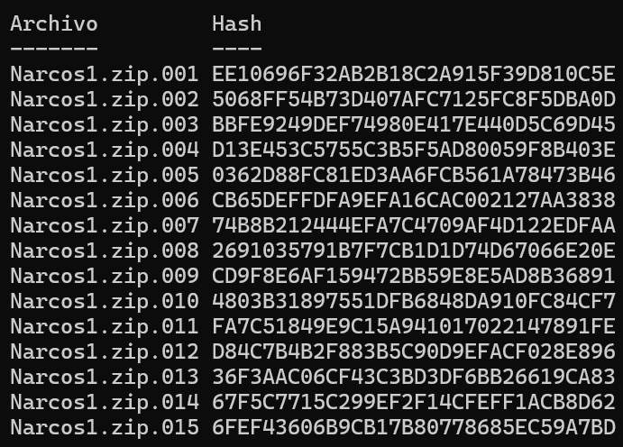
La salida muestra las quince partes con su huella MD5; la primera corresponde a EE10696F32AB2B18C2A915F39D810C5E y la última a 6FEF43606B9CB17B80778685EC59A7BD. Al extraer el archivo se obtuvieron dos carpetas: Image, con los 21 segmentos de la imagen en formato crudo (Narcos-1.001 a Narcos-1.021) y el registro de FTK Imager, y Memory Dump, con un volcado de memoria RAM en tres segmentos. El proyecto se limita al disco, por lo que el volcado de memoria se conservó sin alteraciones y no se analizó.
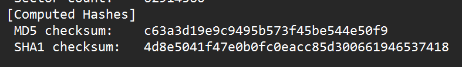
El registro Narcos-1.001.txt de FTK Imager reporta los valores calculados durante la adquisición: MD5 c63a3d19e9c9495b573f45be544e50f9 y SHA-1 4d8e5041f47e0b0fc0eacc85d300661946537418. El mismo registro indica que la imagen procede de un disco virtual de VMware de 30,720 MB, que se adquirió el 17 de febrero de 2019 (sin zona horaria indicada) y que ambos valores se verificaron al concluir la adquisición con el resultado verified.
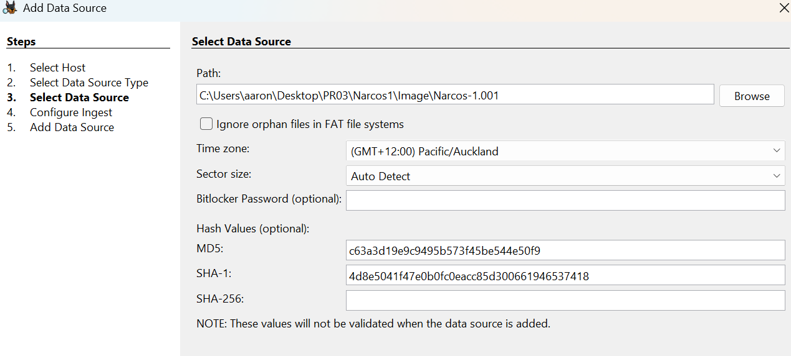
La fuente de datos se agregó indicando el primer segmento de la imagen (Narcos1\Image\Narcos-1.001); Autopsy encadena los segmentos restantes de forma automática. Se seleccionó la zona horaria (GMT+12:00) Pacific/Auckland, que en las fechas del caso corresponde al horario de verano NZDT (UTC+13), y se registraron el MD5 y el SHA-1 de adquisición como valores de referencia para el módulo Data Source Integrity. La misma zona se fijó en Tools → Options → View para que todas las vistas presenten las horas en NZDT.
Se ejecutaron los módulos de ingesta Recent Activity, Hash Lookup, File Type Identification, Picture Analyzer y Data Source Integrity. El disco contiene cinco volúmenes; el sistema Windows se encuentra en vol7 (sectores 1,259,520 a 62,912,511), por lo que las rutas del informe comienzan con /img_Narcos-1.001/vol_vol7/, equivalente a la unidad C:\ del equipo.
Autopsy no decodifica el campo Payload de la base de Windows Timeline (ActivitiesCache.db). Para leerlo, el archivo se exportó con Extract File(s) y se consultó en modo de solo lectura con SQLite; el MD5 de la copia coincide con el reportado por Autopsy (6640280b620017520d521597d1d49688). Del mismo modo, la tabla Run Programs (4,149 registros de BAM y SRUM) se exportó a CSV para filtrarla por nombre de programa.
Respuesta: Windows 10 Pro, versión 1809, compilación 17763.107.
| Artefacto | Colmena SOFTWARE, clave Microsoft\Windows NT\CurrentVersion (en un sistema en ejecución, HKLM\SOFTWARE\Microsoft\Windows NT\CurrentVersion) |
| Ruta | /img_Narcos-1.001/vol_vol7/Windows/System32/config/SOFTWARE |
| Procedimiento | Data Artifacts → Operating System Information; después, apertura de la colmena en la pestaña Application (visor de registro) hasta la clave CurrentVersion. |
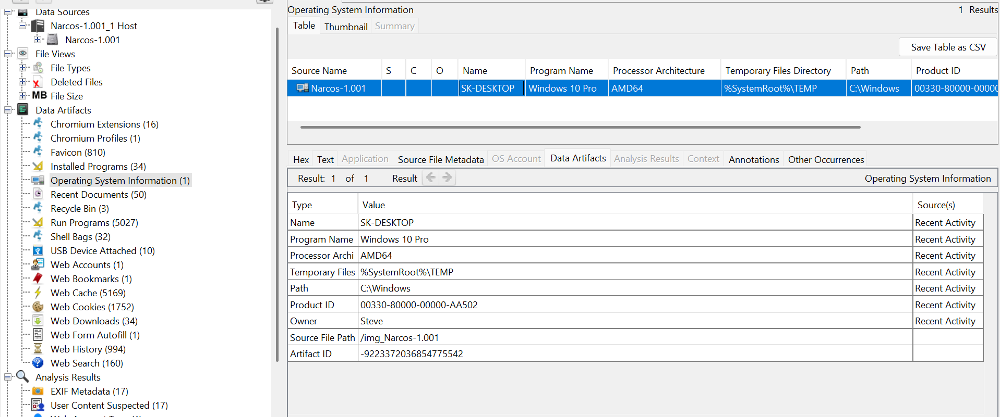
El artefacto Operating System Information, generado por el módulo Recent Activity a partir del registro, identifica el equipo como SK-DESKTOP, con Windows 10 Pro para arquitectura AMD64, instalado en C:\Windows, identificador de producto 00330-80000-00000-AA502 y propietario registrado Steve. Esta vista no incluye la versión, por lo que se consultó directamente la clave de origen.
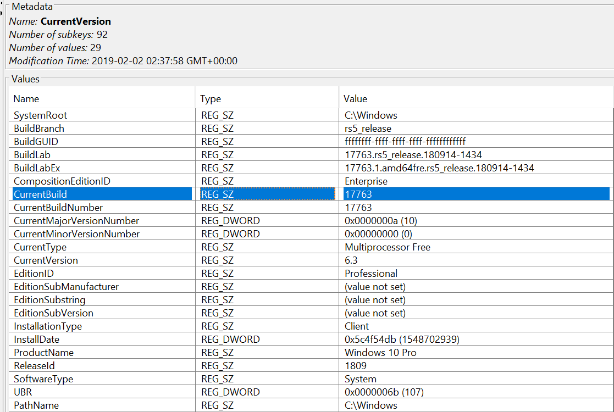
En la clave CurrentVersion se leen los valores ProductName = Windows 10 Pro, EditionID = Professional, ReleaseId = 1809, CurrentBuild = 17763 y UBR = 0x6b (107 en decimal), de donde resulta la compilación 17763.107; el valor BuildLabEx (17763.1.amd64fre.rs5_release.180914-1434) lo confirma. El valor InstallDate = 1548702939, en tiempo Unix, equivale al 2019-01-29 08:15:39 NZDT, es decir, el sistema se instaló pocos días antes de los hechos analizados.
Respuesta: carpeta Steve, con ruta absoluta C:\Users\Steve.
| Ruta | /img_Narcos-1.001/vol_vol7/Users/Steve |
| Procedimiento | Revisión del directorio Users en el árbol de Data Sources. |
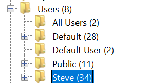
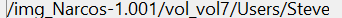
En Users se encuentran las carpetas All Users, Default, Default User y Public, que Windows crea por defecto, y un único perfil de usuario, Steve. La ruta mostrada por Autopsy equivale a C:\Users\Steve. Se considera el perfil principal porque coincide con el propietario registrado del sistema y porque en él se encuentran todos los artefactos de navegación, programas y documentos analizados.
Respuesta: C:\Users\Steve\NTUSER.DAT → Software\Microsoft\Windows\CurrentVersion\Explorer\UserAssist (en un sistema en ejecución, HKCU\Software\Microsoft\Windows\CurrentVersion\Explorer\UserAssist).
| Ruta | /img_Narcos-1.001/vol_vol7/Users/Steve/NTUSER.DAT |
| Procedimiento | Apertura de NTUSER.DAT en el visor de registro y navegación hasta Explorer\UserAssist. |
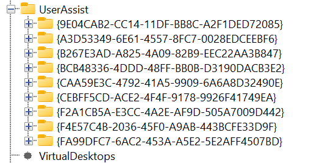
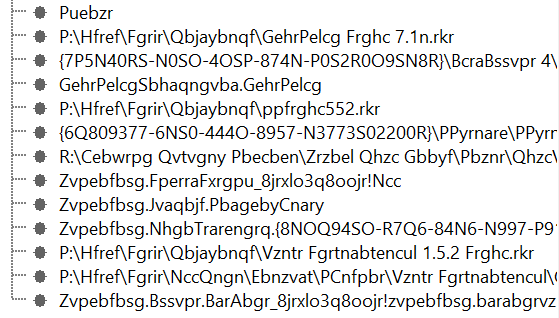
La clave UserAssist contiene nueve subclaves identificadas por GUID; la subclave {CEBFF5CD-ACE2-4F4F-9178-9926F41749EA} registra la ejecución de programas en su carpeta Count. Los nombres se almacenan codificados en ROT13. Al decodificarlos, varias entradas resultan relevantes: GehrPelcg Frghc 7.1n.rkr corresponde a TrueCrypt Setup 7.1a.exe, GehrPelcgSbhaqngvba.GehrPelcg a TrueCryptFoundation.TrueCrypt, ppfrghc552.rkr a ccsetup552.exe (CCleaner), Vzntr Fgrtnabtencul 1.5.2 Frghc.rkr a Image Steganography 1.5.2 Setup.exe y NccQngn\Ebnzvat\PCnfpbr\Vzntr Fgrtnabtencul a la carpeta del programa instalado. La lista incluye también E:\Memory Dump Tools\Comae\DumpIt.exe, ejecutado desde una unidad externa, que corresponde con probabilidad a la captura de memoria realizada durante la adquisición y no se atribuye al usuario.
Respuesta: Google Chrome, con la base SQLite History, y Microsoft Edge, con la base ESE WebCacheV01.dat.
| Chrome | C:\Users\Steve\AppData\Local\Google\Chrome\User Data\Default\History |
| Edge | C:\Users\Steve\AppData\Local\Microsoft\Windows\WebCache\WebCacheV01.dat |
| Procedimiento | Data Artifacts → Web History (994 registros); revisión del campo File de cada registro. |
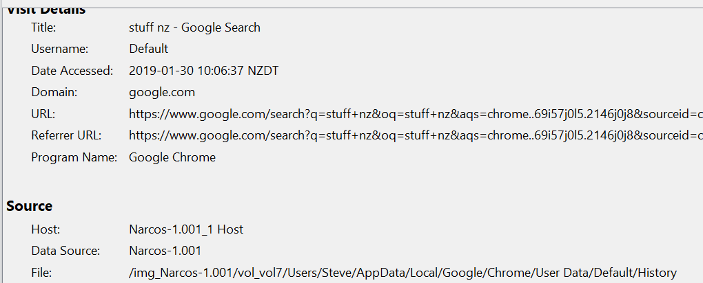
El registro de Chrome corresponde a una búsqueda en Google de «stuff nz» realizada el 2019-01-30 a las 10:06:37 NZDT; el campo File indica que procede de la base …/Google/Chrome/User Data/Default/History.
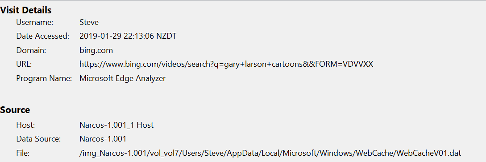
El registro de Edge corresponde a una búsqueda en Bing realizada el 2019-01-29 a las 22:13:06 NZDT por el usuario Steve; fue procesado por el analizador de Edge de Autopsy y procede de …/Microsoft/Windows/WebCache/WebCacheV01.dat.
Respuesta: f3f979c6dee9fbb7cbdf5818aaa4b723.
| Ruta | /img_Narcos-1.001/vol_vol7/Users/Steve/AppData/Local/Google/Chrome/User Data/Default/History |
| Procedimiento | Selección del archivo y lectura de la pestaña File Metadata (MD5 calculado por Hash Lookup). |
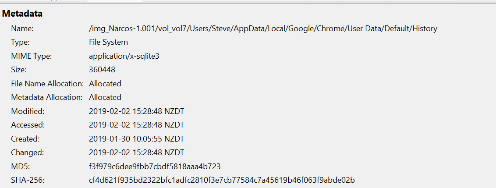
La ficha del archivo indica una base SQLite de 360,448 bytes, creada el 2019-01-30 a las 10:05:55 NZDT, al instalarse Chrome, y modificada por última vez el 2019-02-02 a las 15:28:48 NZDT. El MD5 es f3f979c6dee9fbb7cbdf5818aaa4b723.
Respuesta: C:\Users\Steve\Documents\Misc\airport crystals.jpg.
| Ruta | /img_Narcos-1.001/vol_vol7/Users/Steve/Documents/Misc/airport crystals.jpg |
| Procedimiento | Tools → File Search by Attributes con el término «airport»; lectura de File Metadata. |
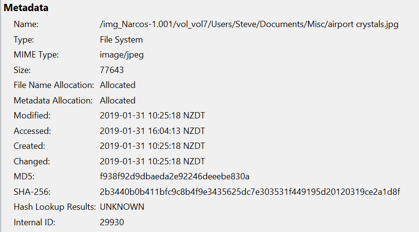
La búsqueda devolvió la imagen, su flujo :Zone.Identifier y dos accesos directos, airport crystals.lnk y airport crystals.jpg.lnk; estos últimos se generan cuando el archivo se abre, lo que indica que la imagen fue consultada. La ficha de metadatos muestra la ruta completa, un tamaño de 77,643 bytes y el MD5 f938f92d9dbaeda2e92246deeebe830a.
Respuesta: 2019-01-31 10:25:18 NZDT.
| Artefacto | Marca Created de NTFS, en File Metadata (captura anterior). |
En la ficha anterior, Created, Modified y Changed registran el mismo valor, 2019-01-31 10:25:18 NZDT, lo que indica que el archivo se escribió de una sola vez y no se editó después. El último acceso fue el 2019-01-31 a las 16:04:13 NZDT.
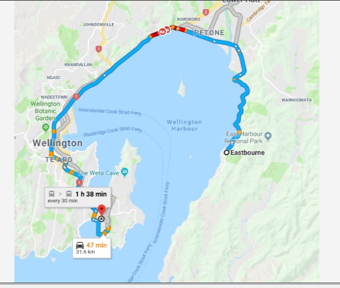
La imagen es una captura de Google Maps con una ruta que parte del sur de Wellington, cerca del aeropuerto, rodea la bahía por Petone y termina en Eastbourne, con una duración estimada de 47 minutos en automóvil (31.6 km).
Respuesta: 7feb763bebe42c3a3464c9ee3bb1d3e8.
| Ruta | /img_Narcos-1.001/vol_vol7/Users/Steve/Documents/Misc/dropoff.jpg |
| Procedimiento | Navegación a Documents\Misc y lectura de File Metadata. |
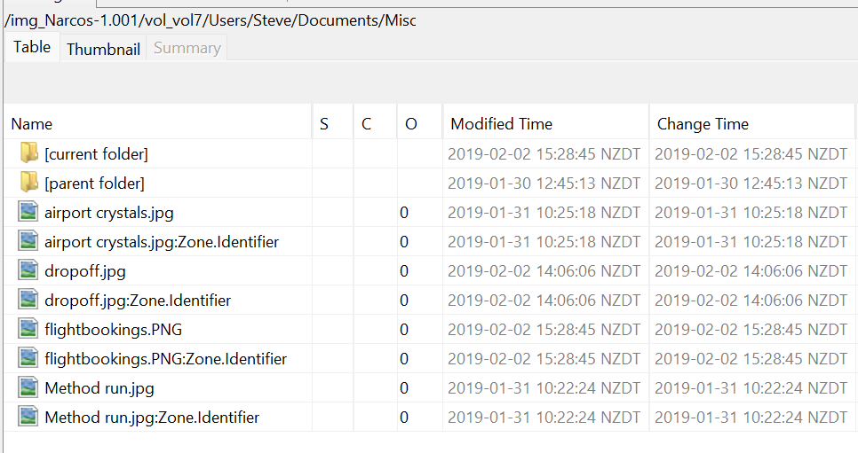
La carpeta Documents\Misc contiene cuatro imágenes, airport crystals.jpg, dropoff.jpg, flightbookings.PNG y Method run.jpg, cada una con su flujo alterno :Zone.Identifier, que se analiza en la Parte II.
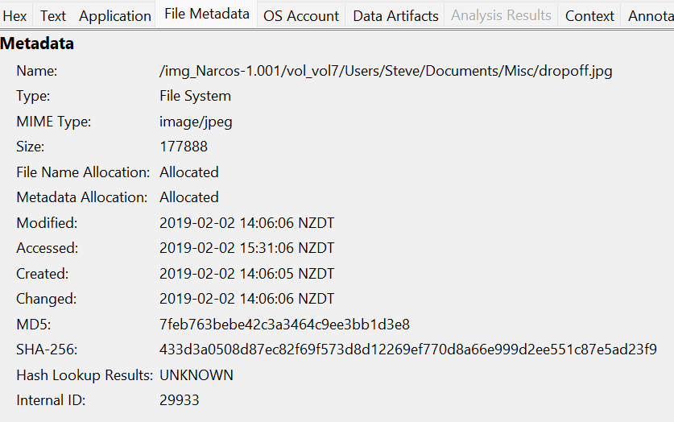
La ficha de dropoff.jpg corresponde a una imagen JPEG de 177,888 bytes con MD5 7feb763bebe42c3a3464c9ee3bb1d3e8. El resultado UNKNOWN en Hash Lookup indica que el archivo no figura en bases de archivos conocidos, lo cual es esperable en contenido generado por el usuario.
Respuesta: 2019-02-02 14:06:06 NZDT.
| Artefacto | Marca Modified de NTFS, en File Metadata (captura anterior). |
El archivo se creó a las 14:06:05 y se modificó por última vez a las 14:06:06 del 2 de febrero de 2019, un segundo después, patrón propio de un archivo que se crea y se escribe de inmediato.
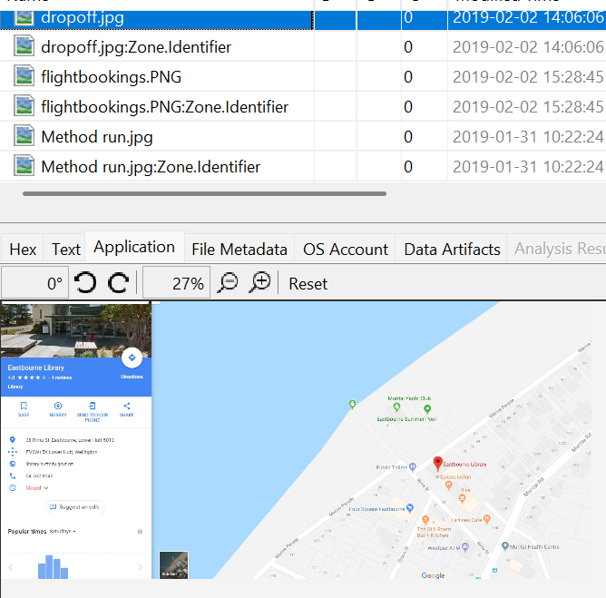
Su contenido es una captura de Google Maps con la ficha de la Eastbourne Library, su dirección en Eastbourne, Lower Hutt, y su ubicación en el mapa. La biblioteca de Eastbourne es uno de los dos puntos de entrega mencionados en el caso.
Respuesta: flightbookings.PNG, en C:\Users\Steve\Documents\Misc\flightbookings.PNG.
| Ruta | /img_Narcos-1.001/vol_vol7/Users/Steve/Documents/Misc/flightbookings.PNG |
| Procedimiento | Listado de Documents\Misc y visualización en la pestaña Application. |
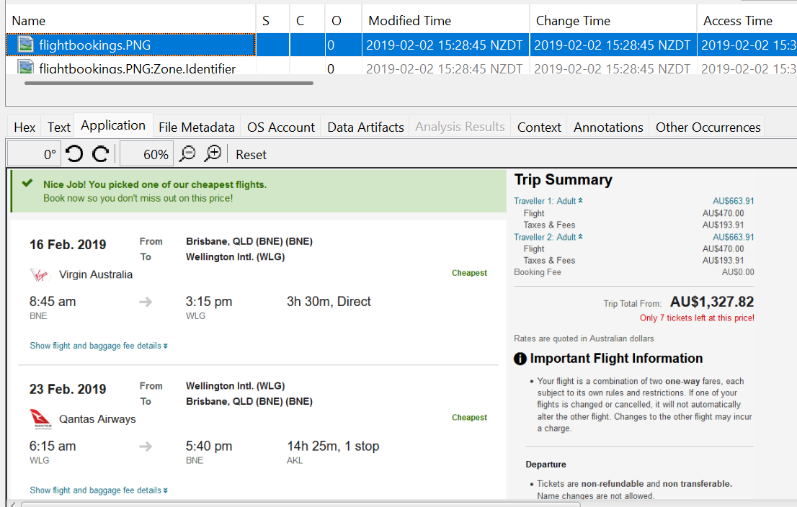
La imagen es una página de resultados de un buscador de vuelos. Presenta un vuelo de ida el 16 de febrero de 2019 de Brisbane (BNE) a Wellington (WLG) en Virgin Australia, con salida a las 8:45 y llegada a las 15:15, y un regreso el 23 de febrero en Qantas con escala en Auckland. El resumen cotiza a dos adultos por un total de AU$1,327.82 e invita a realizar la reserva («Book now»), por lo que se trata de una cotización y no de una confirmación de compra. El archivo, de 52,971 bytes, se creó el 2019-02-02 a las 15:28:44 NZDT y su MD5 es d1b21a1cddcb3494d637f2424cc5f0f1.
Respuesta: 69b225bc0ef5a0c003f1e2a6646aaf92.
| Ruta | /img_Narcos-1.001/vol_vol7/Users/Steve/Documents/Misc/Method run.jpg |
| Procedimiento | Selección del archivo en Documents\Misc y lectura de File Metadata. |
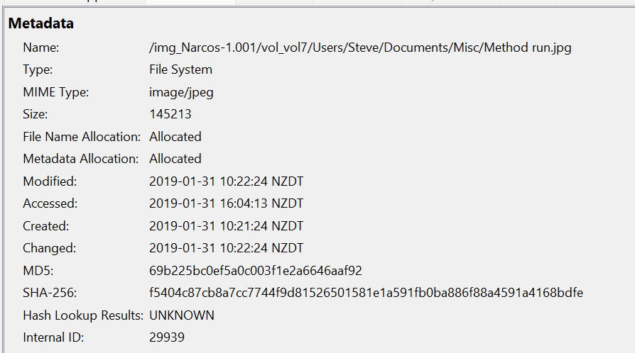
La ficha corresponde a un JPEG de 145,213 bytes, creado el 2019-01-31 a las 10:21:24 NZDT y modificado a las 10:22:24, con MD5 69b225bc0ef5a0c003f1e2a6646aaf92. Su último acceso, el 2019-01-31 a las 16:04:13 NZDT, coincide al segundo con el de airport crystals.jpg.
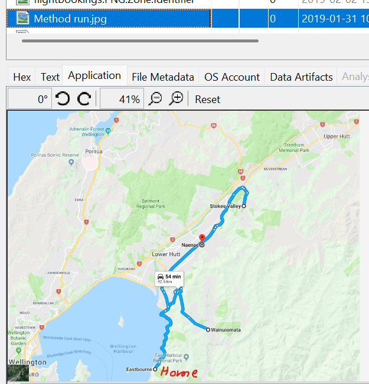
La imagen es una captura de Google Maps con una ruta que parte de Eastbourne, punto señalado a mano con la palabra «Home», y recorre Lower Hutt, Naenae, Stokes Valley y Wainuiomata, con una distancia de 42.5 km y 54 minutos estimados en automóvil.
Respuesta: dffa98bdd7371d1806adb09db27ba283.
| Ruta | /img_Narcos-1.001/vol_vol7/Users/Steve/Downloads/Misc/BNE.png |
| Procedimiento | File Search by Attributes con el término «BNE» y lectura de File Metadata. |
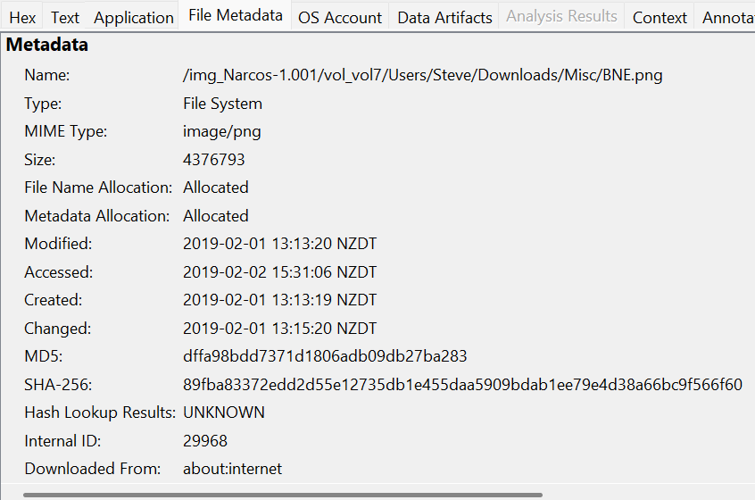
A diferencia de las demás imágenes, BNE.png se encuentra en Downloads\Misc, junto al instalador DiscordSetup.exe. Es un PNG de 4,376,793 bytes creado el 2019-02-01 a las 13:13:19 NZDT, con MD5 dffa98bdd7371d1806adb09db27ba283. El campo Downloaded From: about:internet proviene de su Zone.Identifier e indica que Windows lo marcó como procedente de internet sin registrar una dirección concreta.
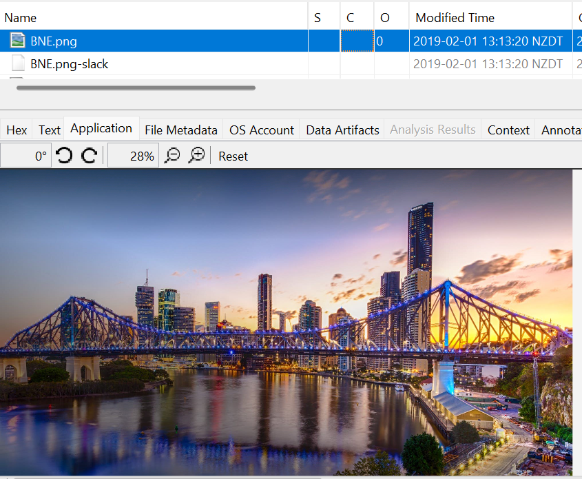
El contenido es una fotografía nocturna del Story Bridge y del centro de Brisbane. BNE es el código del aeropuerto de esa ciudad, origen del vuelo cotizado; la imagen no contiene información logística visible.
Respuesta: Image Steganography 1.5.2 Setup.exe, en C:\Users\Steve\Downloads\, con MD5 c9b7c382dea6d7f45ae1bf437860cb69.
| Ruta | /img_Narcos-1.001/vol_vol7/Users/Steve/Downloads/Image Steganography 1.5.2 Setup.exe |
| Procedimiento | Listado de Downloads y lectura de File Metadata. |
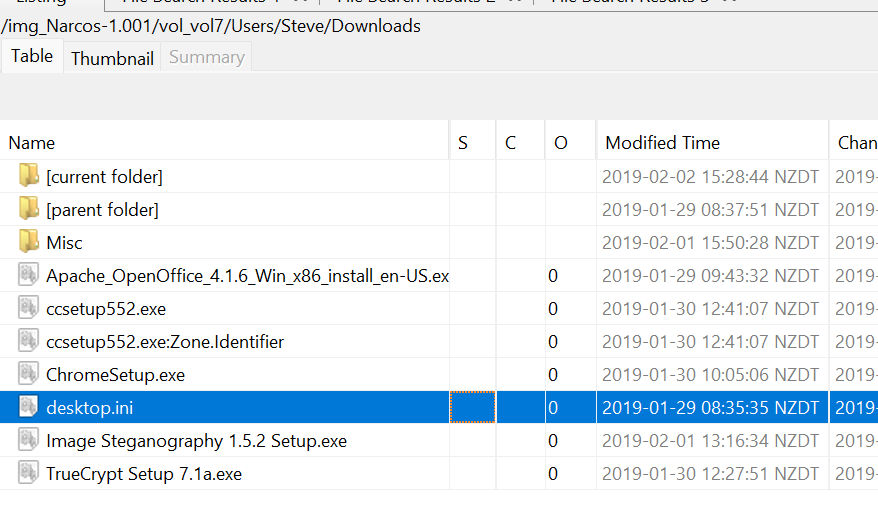
La carpeta Downloads contiene los instaladores de OpenOffice, CCleaner (ccsetup552.exe), Chrome, Image Steganography 1.5.2 y TrueCrypt 7.1a, además de la subcarpeta Misc.
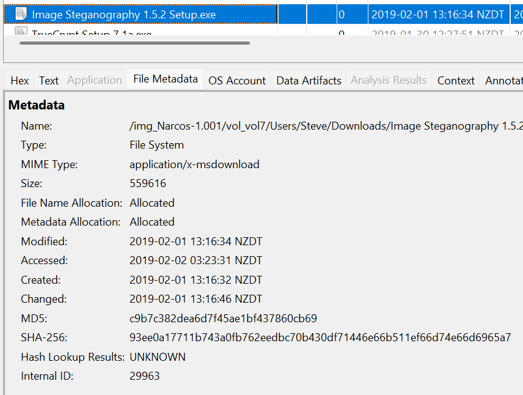
El instalador es un ejecutable de 559,616 bytes creado el 2019-02-01 a las 13:16:32 NZDT, con MD5 c9b7c382dea6d7f45ae1bf437860cb69. Su último acceso (2019-02-02 03:23:31 NZDT) coincide casi al segundo con el del instalador de TrueCrypt, lo que sugiere un proceso automático que recorrió la carpeta.
Respuesta: TrueCrypt Setup 7.1a.exe, en C:\Users\Steve\Downloads\TrueCrypt Setup 7.1a.exe.
| Ruta | /img_Narcos-1.001/vol_vol7/Users/Steve/Downloads/TrueCrypt Setup 7.1a.exe |
| Procedimiento | Listado de Downloads y lectura de File Metadata. |
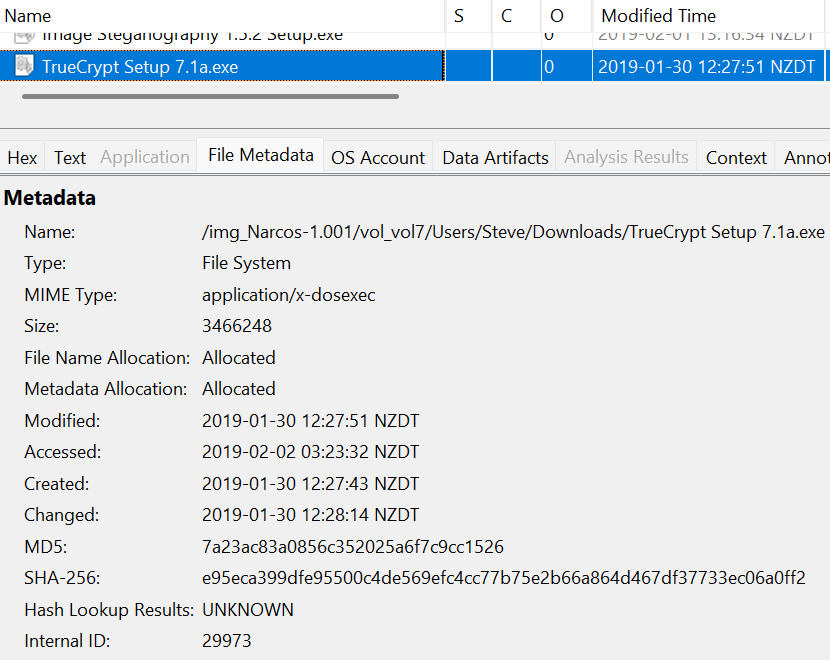
Se trata de un ejecutable de 3,466,248 bytes creado el 2019-01-30 a las 12:27:43 NZDT, con MD5 7a23ac83a0856c352025a6f7c9cc1526. TrueCrypt 7.1a permite crear volúmenes y contenedores cifrados; su presencia, por sí sola, no acredita su uso.
Respuesta: caché de Discord en C:\Users\Steve\AppData\Roaming\Discord\Cache; Windows Timeline en C:\Users\Steve\AppData\Local\ConnectedDevicesPlatform\2418c0082017486a\ActivitiesCache.db.
| Rutas | /img_Narcos-1.001/vol_vol7/Users/Steve/AppData/Roaming/Discord/Cache/img_Narcos-1.001/vol_vol7/Users/Steve/AppData/Local/ConnectedDevicesPlatform/2418c0082017486a/ActivitiesCache.db |
| Procedimiento | Navegación a AppData\Roaming\Discord; búsqueda por atributos de «ActivitiesCache» y lectura de su ruta en File Metadata. |
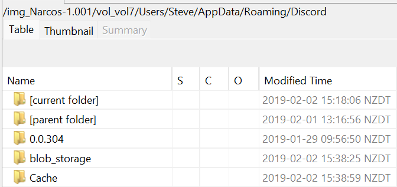
La carpeta AppData\Roaming\Discord contiene la estructura del cliente de escritorio: la carpeta de versión 0.0.304 (fechada el 2019-01-29 a las 09:56:50 NZDT, al instalarse Discord), blob_storage y la caché Cache, modificada por última vez el 2019-02-02 a las 15:38:59 NZDT. En la caché, Discord almacena copias locales de imágenes, avatares y adjuntos.
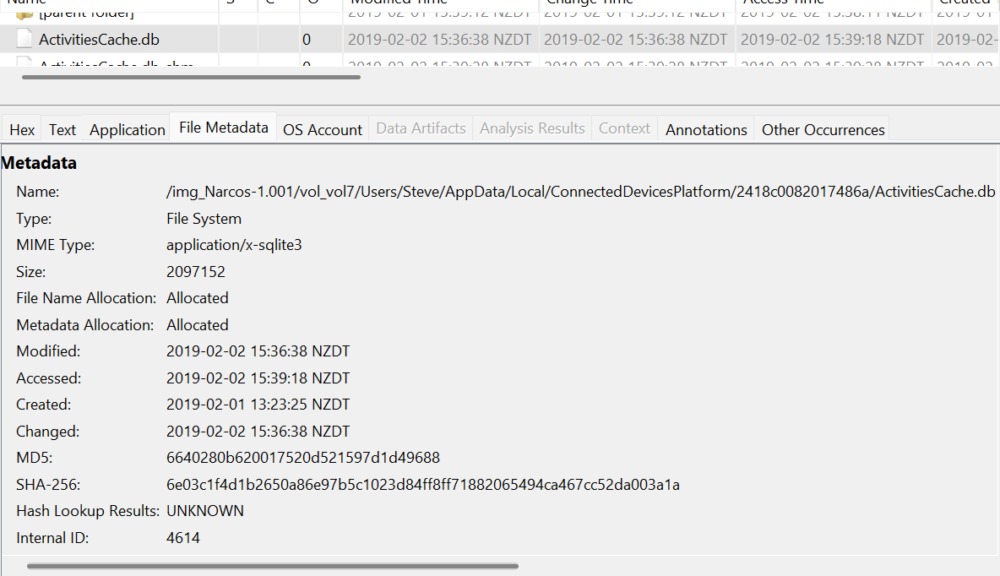
La ficha de ActivitiesCache.db muestra la ruta completa, que incluye la carpeta 2418c0082017486a, identificador asignado por Windows a la cuenta local. Es una base SQLite de 2,097,152 bytes, modificada por última vez el 2019-02-02 a las 15:36:38 NZDT, con MD5 6640280b620017520d521597d1d49688.
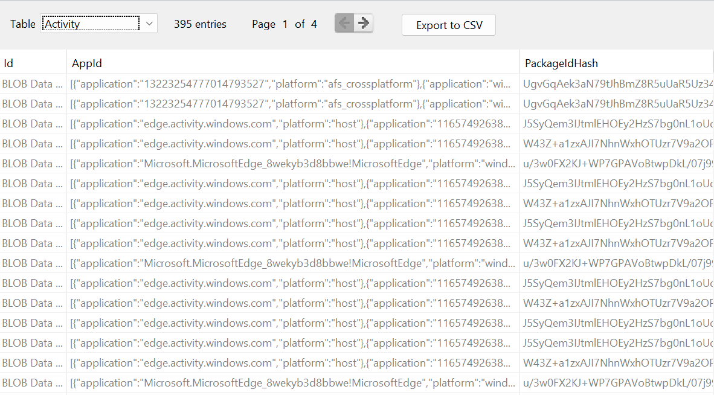
La tabla Activity contiene 395 registros. Autopsy muestra el campo Payload como BLOB Data, por lo que su contenido se obtuvo de la copia exportada mediante SQLite y se utiliza en la Parte II.
Cada respuesta distingue lo observado en los artefactos, la interpretación propuesta y las limitaciones de la evidencia disponible.
Para establecer el origen de cada imagen se examinó en la pestaña Hex el flujo alterno :Zone.Identifier de cada imagen. Windows escribe este flujo cuando una aplicación guarda un archivo de origen externo; según la aplicación, registra la dirección de descarga o el nombre del programa que escribió el archivo.
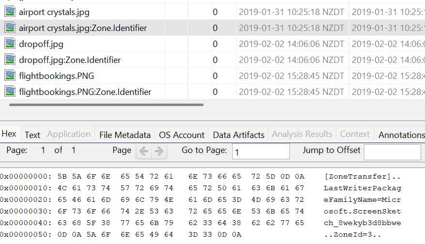
El flujo de airport crystals.jpg contiene LastWriterPackageFamilyName=Microsoft.ScreenSketch_8wekyb3d8bbwe y ZoneId=3. Microsoft.ScreenSketch es el identificador interno de Snip & Sketch, la herramienta de recortes de pantalla de Windows 10; el valor ZoneId=3 lo asigna la propia aplicación al guardar y, en este caso, no implica una descarga. Method run.jpg y dropoff.jpg presentan exactamente el mismo contenido.
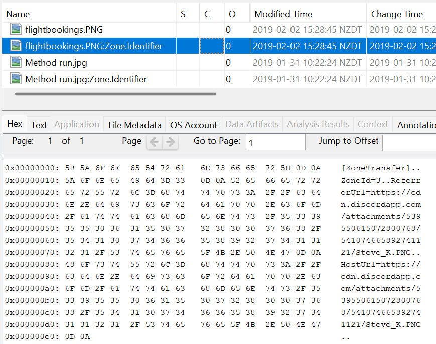
El flujo de flightbookings.PNG registra ZoneId=3 y, en los campos ReferrerUrl y HostUrl, la dirección https://cdn.discordapp.com/attachments/539550615072800768/541074665892741121/Steve_K.PNG. Es el formato que deja un navegador al guardar una descarga: la imagen se obtuvo de la red de adjuntos de Discord, donde se llamaba Steve_K.PNG, y se guardó con otro nombre. El flujo de BNE.png, en cambio, solo contiene ZoneId=3 y HostUrl=about:internet.
| Imagen | Origen (Zone.Identifier) | Creación (NZDT) | Actividad simultánea (Windows Timeline) |
|---|---|---|---|
| Method run.jpg | Snip & Sketch | 2019-01-31 10:21:24 | Snip & Sketch en primer plano, 10:20:30–10:22:25 |
| airport crystals.jpg | Snip & Sketch | 2019-01-31 10:25:18 | Snip & Sketch en primer plano, 10:24:59–10:25:19 |
| BNE.png | Internet, sin URL | 2019-02-01 13:13:19 | Discord en primer plano, 13:09:06–13:13:06 |
| dropoff.jpg | Snip & Sketch | 2019-02-02 14:06:05 | Snip & Sketch en primer plano, 14:05:32–14:06:07 |
| flightbookings.PNG | Discord (Steve_K.PNG) | 2019-02-02 15:28:44 | Discord, 15:27:16–15:30:57; apertura de Steve_K.PNG a las 15:28:18 |
Observación. flightbookings.PNG es una cotización para dos adultos de un vuelo Brisbane–Wellington el 16 de febrero de 2019, con regreso el 23 de febrero; no contiene localizador ni nombres de pasajeros. BNE.png es una fotografía de Brisbane cuyo nombre coincide con el código de su aeropuerto. dropoff.jpg es la ficha de la biblioteca de Eastbourne. La primera se descargó de Discord el 2019-02-02 a las 15:28 NZDT, la segunda llegó de internet el 2019-02-01 a las 13:13 y la tercera es una captura realizada en el equipo el 2019-02-02 a las 14:06. Las tres registran el mismo último acceso: 2019-02-02 15:31:06 NZDT.
Interpretación. Las tres imágenes describen el trayecto del caso: el origen en Brisbane, la llegada de dos personas a Wellington y el punto de entrega en Eastbourne. Los pasajeros interceptados procedían de Australia y llegaron a Wellington, y la biblioteca de Eastbourne es uno de los lugares de entrega señalados. Que la información del vuelo llegara por Discord indica que se compartió por ese medio. El acceso simultáneo a las 15:31:06, nueve segundos después de concluir la sesión de Discord, sugiere una sola operación sobre los tres archivos.
Limitaciones. No puede afirmarse que el vuelo se haya comprado ni que los viajeros fueran Fredricksen y Esteban. Tampoco puede determinarse quién subió Steve_K.PNG a Discord, a quién se envió ni qué operación produjo el acceso de las 15:31:06.
El registro utilizado es Windows Timeline (ActivitiesCache.db), complementado con el flujo Zone.Identifier y las marcas de la MFT.
| Hora (NZDT), 2019-01-31 | Fuente | Evento |
|---|---|---|
| 10:20:30 | Timeline | Apertura de Snip & Sketch |
| 10:21:24 – 10:22:24 | MFT | Creación y escritura de Method run.jpg |
| 10:24:59 – 10:25:19 | Timeline | Snip & Sketch en primer plano |
| 10:25:18 | MFT | Creación de airport crystals.jpg |
| 15:29:01 – 15:36:12 | Timeline | Discord en primer plano |
| 16:04:13 | MFT | Último acceso a ambas imágenes |
Observación. Ambas imágenes fueron escritas por Snip & Sketch y se crearon mientras esa aplicación estaba en uso, con unos cuatro minutos de diferencia. Las dos son capturas de Google Maps: airport crystals.jpg muestra una ruta desde la zona del aeropuerto de Wellington hasta Eastbourne pasando por Petone, y Method run.jpg una ruta de 42.5 km que parte de Eastbourne, anotada a mano como «Home», y recorre Naenae, Stokes Valley y Wainuiomata. Existen accesos directos .lnk de airport crystals.jpg.
Interpretación. Las imágenes se elaboraron en el equipo durante una misma sesión: las rutas se consultaron en Google Maps, se recortaron con Snip & Sketch, una de ellas se anotó a mano y se guardaron con nombres descriptivos. La finalidad que puede sostenerse es la planeación de traslados: la primera ruta une el aeropuerto con Eastbourne y pasa por Petone, los tres lugares del caso; la segunda describe un recorrido de varias paradas desde «Home», congruente con el nombre Method run. En el contexto del caso, el término «crystals» coincide con una denominación coloquial de la metanfetamina, aunque se trata de una lectura del nombre del archivo.
Limitaciones. No puede determinarse quién realizó las capturas, si las rutas se recorrieron, qué representa «Home» para quien lo escribió ni si las imágenes se compartieron.
Observación.
discordapp.com/download a las 09:55:54 (Timeline); instalador DiscordSetup.exe en Downloads\Misc.AppData\Local\Discord\app-0.0.304 y AppData\Roaming\Discord.com.squirrel.Discord.Discord en UserAssist; 60 registros de SRUM de Discord.exe con uso de red entre el 2019-01-29 a las 10:12 y el 2019-02-02 a las 15:39; sesiones en primer plano los cinco días del periodo.Steve_K.PNG, del canal 539550615072800768, guardado como flightbookings.PNG.Interpretación. Discord se descargó, instaló, ejecutó y utilizó de forma continua durante todo el periodo, con tráfico de red, y fue el medio por el que llegó al menos un archivo relacionado con el viaje. El nombre del adjunto, Steve_K, coincide con las iniciales del investigado y con el nombre del equipo, SK-DESKTOP.
Limitaciones. Sin mensajes recuperados no es posible establecer el contenido de las conversaciones, los interlocutores ni la autoría de los mensajes o del adjunto. El identificador del canal no revela participantes, y el nombre del archivo no prueba quién lo subió. Para sostener cualquiera de esas afirmaciones se requieren mensajes recuperados de la caché local o registros proporcionados por Discord mediante requerimiento legal.
Se cruzaron la MFT, Installed Programs (colmena SOFTWARE), BAM (colmena SYSTEM), SRUM, UserAssist y Windows Timeline.
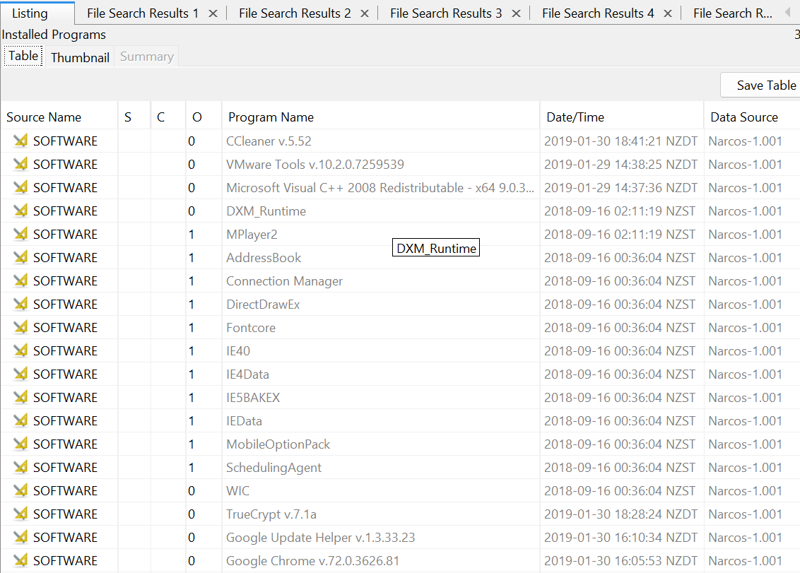
Installed Programs registra TrueCrypt v.7.1a y CCleaner v.5.52, pero no Image Steganography ni Discord, que se instalan dentro del perfil del usuario y no en esta clave. Las horas de esta vista presentan un desfase constante de seis horas respecto a BAM (TrueCrypt 18:28:24 frente a 12:28:33; CCleaner 18:41:21 frente a 12:42:14), por lo que la cronología se basa en BAM, SRUM y Timeline, que coinciden entre sí.
| Nivel | Image Steganography 1.5.2 | TrueCrypt 7.1a |
|---|---|---|
| Descarga | Instalador en Downloads, creado el 2019-02-01 a las 13:16:32 NZDT. | Instalador en Downloads, creado el 2019-01-30 a las 12:27:43 NZDT. |
| Instalación | Programa en AppData\Roaming\CPascoe\Image Steganography\ProgData (UserAssist, BAM). | Registrado en Installed Programs; ejecutables en C:\Program Files\TrueCrypt\. |
| Ejecución | BAM: instalador a las 13:16:56 y programa a las 13:19:15; SRUM: uso a las 13:27; UserAssist. | BAM: instalador a las 12:28:33, TrueCrypt Format.exe a las 12:33:06 y TrueCrypt.exe a las 13:34:14; Timeline: en primer plano de 12:31:25 a 12:33:52; SRUM; UserAssist. |
| Uso efectivo | No demostrado: no se identificó ningún archivo generado por la herramienta. | No demostrado: se abrió el asistente de creación de volúmenes, pero no se localizó ningún contenedor ni registro de montaje. |
Observación. Ambas herramientas se descargaron, instalaron y ejecutaron en la cuenta Steve, con registros de ejecución concordantes en al menos tres artefactos independientes. CCleaner se instaló el 30 de enero a las 12:42 y permaneció en primer plano casi nueve minutos el 1 de febrero (15:41:18–15:50:32).
Interpretación. En cuatro días se reúnen en el equipo tres capacidades: cifrar volúmenes, ocultar datos en imágenes y eliminar rastros, lo que es congruente con la intención de proteger u ocultar información. La secuencia del 1 de febrero es relevante: BNE.png, de 4.2 MB, llegó a las 13:13 mientras Discord estaba en uso, y tres minutos después se descargó y ejecutó la herramienta de esteganografía. Por ello, BNE.png es candidata prioritaria a contener información oculta.
Limitaciones. La ejecución de un programa no demuestra que haya producido un resultado. No hay un contenedor TrueCrypt identificado, ni un archivo de salida de la herramienta de esteganografía, ni prueba de que BNE.png contenga datos incrustados. Tampoco puede determinarse qué eliminó CCleaner.
Steve_K.PNG el 2019-02-02 a las 15:28 NZDT.El equipo SK-DESKTOP, desde la cuenta Steve, se utilizó para preparar y coordinar el ingreso y la entrega investigados: se recibió por Discord la información de un vuelo de Brisbane a Wellington para dos personas en la fecha de la intercepción, se planearon las rutas entre el aeropuerto, Petone y Eastbourne y un recorrido con varias paradas, se documentó el punto de entrega y se dispusieron herramientas para cifrar, ocultar y eliminar información.
Los mismos artefactos son compatibles con actividades lícitas. Alguien pudo organizar la visita de dos conocidos desde Brisbane: cotizar un vuelo no equivale a comprarlo, y consultar rutas o la ubicación de una biblioteca es una actividad habitual. TrueCrypt, CCleaner y la herramienta de esteganografía son programas legales que se usan por privacidad o curiosidad, y no hay prueba de que se aplicaran a algún archivo. Además, la cuenta Steve no identifica a la persona, y el equipo pudo ser utilizado por otra persona con acceso al inmueble. Esta explicación pierde fuerza ante la coincidencia de fechas, lugares y número de viajeros y la concentración de herramientas de ocultamiento en pocos días, pero el disco, por sí solo, no la descarta.
539550615072800768 y el adjunto 541074665892741121, para identificar participantes, autor de la subida y contenido de los mensajes.De forma complementaria, los registros de la aerolínea para el vuelo BNE–WLG del 16 de febrero de 2019 permitirían saber si la reserva se concretó y a nombre de quién.
Basis Technology. (s. f.). Autopsy [Software]. https://www.autopsy.com/
Digital Corpora. (2019). 2019 Narcos [Conjunto de datos: imagen de disco Narcos-1 y volcado de memoria]. https://digitalcorpora.org/corpora/scenarios/2019-narcos/
Garfinkel, S., Farrell, P., Roussev, V. y Dinolt, G. (2009). Bringing science to digital forensics with standardized forensic corpora [Ponencia]. Digital Forensic Research Workshop (DFRWS), Montreal, Canadá. https://simson.net/clips/academic/2009.DFRWS.Corpora.pdf